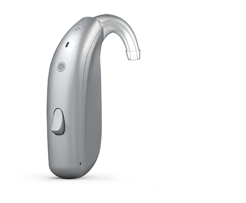

Perdas maiores
Mais ganho e potência para perdas moderadas a severas. O Power BTE atende também as profundas.
Aparelhos auditivos GN Danavox / BTE
Para quem precisa de mais potência
Os aparelhos auditivos BTE 77 e Power BTE 88 ficam atrás da orelha e foram feitos para perdas auditivas maiores, incluindo as severas e profundas no caso do Power BTE. Recarregáveis, robustos e fáceis de manusear.

Para quem é
Mais ganho e potência para perdas moderadas a severas. O Power BTE atende também as profundas.
Um aparelho auditivo de tamanho confortável para pegar, colocar e tirar. Ótimo para quem tem pouca firmeza nas mãos.
O Power BTE tem botão e controle de volume no próprio aparelho, sem depender do celular.
Bobina telefônica para igreja, teatro, auditórios e telefones compatíveis.
Talvez outro aparelho auditivo combine mais com você
No seu dia a dia
Ficha rápida do aparelho auditivo
O essencial do GN Danavox BTE e Power BTE, em português claro. O formato, a potência e o nível de tecnologia do aparelho auditivo certo para você são definidos na avaliação.
Como é o teste do aparelho auditivo
Aparelhos auditivos no Jardim Paulista · Alameda Jaú, 72 · Atendimento particular
Dúvidas sobre aparelhos auditivos
Não mais. O GN Danavox BTE é recarregável, conecta ao celular e tem cores que combinam com o cabelo. Ele é um pouco maior porque entrega mais potência, e isso faz diferença para quem precisa.
O Power BTE 88 foi feito para perdas severas a profundas. A indicação depende da audiometria, que fazemos antes do teste.
É o formato mais fácil de manusear da linha. Na consulta você treina colocar e tirar até se sentir seguro.
O valor do aparelho auditivo depende do formato e do nível de tecnologia (são quatro). Ele é apresentado depois da avaliação, com clareza, e você só decide depois de testar.
A adaptação ao aparelho de audição é progressiva e faz parte do processo. Você testa no dia a dia, volta para ajustes e a gente regula até o som ficar natural para você.
Teste de aparelho auditivo
Marque as opções e a mensagem já sai pronta no WhatsApp do consultório.
Outros aparelhos auditivos GN Danavox
Fale comigo
Tire suas dúvidas sobre aparelho auditivo antes de agendar. Sem compromisso.